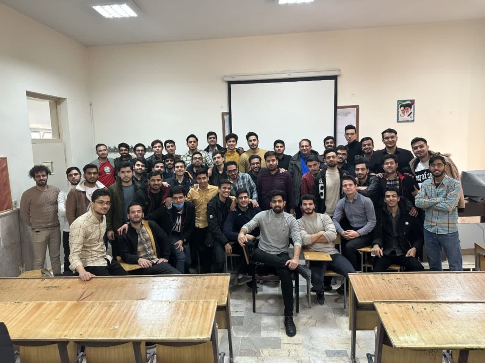
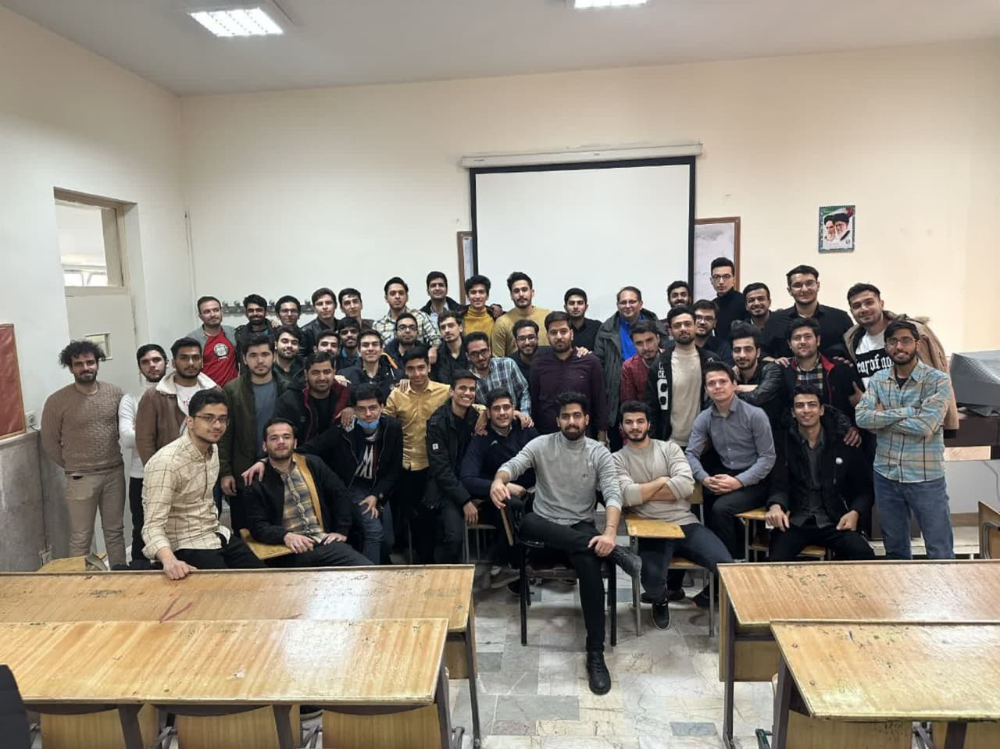

تصاویر

 

بیوگرافی
من رضا بهره مند خیرآبادی متولد 5 آبان 1379 در مشهد هستم. من عاشق سیاست و ورزش هستم، من طرفدار رِئال مادرید و استقلال هستم. در حال حاضر دبیر ریاضی هستم و دانشجوی ارشد علوم داده دانشگاه فردوسی مشهد. دوره کارشناسی خود را در رشته آموزش ریاضی دانشگاه فرهنگیان گذراندم، و دوره دبیرستان را در رشته ریاضی فیزیک دبیرستان هاشمی نژاد 1 مشهد گذراندم.